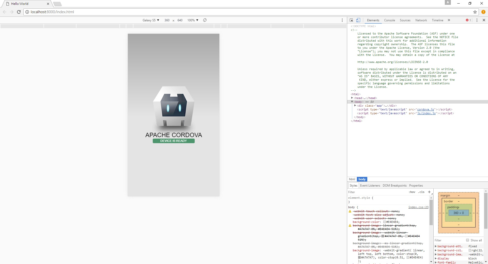

Cordova - 環境安裝
文章目錄
前言
什麼是Cordova?
Cordova是一種讓網頁工程師不需要學會手機程式原生語言(例如Java和objecive-C)，也能寫出手機App的一種網頁前端框架，不管是iOS或是Android平台，只要你會HTML、CSS、Javasript就OK了。
Cordova的演變
來簡單說說Cordova的演變Cordova的前身叫PhoneGap，原本是Nitobi開發的，後來被Adobe收購後改名叫做Adobe PhoneGap，Adobe又把代碼捐給Apache基金會，但保留商標所有權，Apache這邊則是改叫另一個名稱叫Apache Cordova。 基本上Adobe PhoneGap和Apache Cordova的基底都是Cordova，所以兩邊的寫的程式碼可以共通是沒問題，不過platform建議是用同一邊寫的，然後兩邊環境有什麼不同也大概說一下Adobe PhoneGap這邊是要付費的而且編譯器是在雲端上編輯，沒付費的話還是能用，只是線上的專案只能創建一個，可以拿到的軟體部分只有模擬器的部分，Apache Cordova這邊則是編譯和模擬器全都有，這邊以Apache Cordova為主。
實作
事前準備工具
安裝Cordova
首先開啟自己的cmd安裝，Mac OS可能會有權限問題 npm前面記得加sudo
$ npm install -g cordova
裝好之後就能使用以下指令創建專案了
$ cordova create 專案名稱
再來我們要幫專案加入使用平台，我們一般會先用瀏覽器看，所以我們先裝browser這個platform，還有不要忘記指向自己的專案資料夾底下
$ cordova platform add browser
然後就能用我們的瀏覽器來跑了
$ cordova run browser
執行成功會自動開啟瀏覽器，然後按F12開啟開發人員模式，切成手機模式瀏覽，如下圖 
後記
其實Cordova這框架是老闆想寫App但是沒人會，所以找來老師上了幾堂簡單的App課程，當時教得是Adobe PhoneGap，其實不知道為什麼不是教Apache Cordva，這個能做的事情明明比較多，後來想想好像是因為Adobe PhoneGap有圖形介面，大概是考慮了這問題，反正就因為這樣就莫名其妙開始使用了這框架，編譯成Android之前會在另外寫一篇，就先這樣啦!